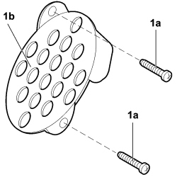
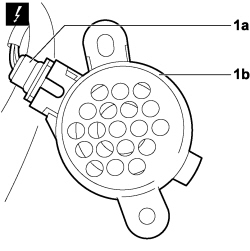

5580H12 PARKING OBSTACLE DETECTION DEVICE BUZZER - R.R.
- Path
- Procedures > 55 ELECTRICAL EQUIPMENT > 5580 SPECIAL ACCESSORIES > 5580H PARKING OBSTACLE DETECTION DEVICE > 5580H12 PARKING OBSTACLE DETECTION DEVICE BUZZER - R.R.
- Kind
- repair procedure (removal / refitting; the operation number is the code)
- Applies to
- engines: 1.4 8v, 1.6 16v, 1.3 JTD 16V, 1.9 JTD 8V; all production periods
- Interactive page
- https://sloeber94.github.io/elrnDB-fDbl/en/#/223000179
Applies to: engines: 1.4 8v, 1.6 16v, 1.3 JTD 16V, 1.9 JTD 8V; production: da 12/03; only with equipment: MY 2005
 Removing
Removing
 Refitting
RefittingTurn the ignition key to the OFF position.
Lift the bonnet
Disconnect the negative battery terminal.
Description | Connector | |
|---|---|---|
- | BATTERY |
1. Working on the passenger side front seat, unscrew bolts (1a) securing parking obstacle detection device buzzer (1b) and remove it partly from its seat.

Applies to: engines: 1.4 8v, 1.6 16v, 1.3 JTD 16V, 1.9 JTD 8V; production: da 12/03; only with equipment: MY 2005
1. Disconnect electrical connection (1a) from the parking obstacle detection sensor (1b) from the vehicle.
Description | Connector | |
|---|---|---|
1a | PARKING SENSOR BUZZER |

Applies to: engines: 1.4 8v, 1.6 16v, 1.3 JTD 16V, 1.9 JTD 8V; production: da 12/03; only with equipment: MY 2005
Refitting
RemovingCheck that the parking obstacle detection device buzzer is undamaged.
Connect the electrical connection to the parking obstacle detection device buzzer.
Description | Connector | |
|---|---|---|
- | PARKING SENSOR BUZZER |
Tighten the fixing bolts.
Connect the negative battery terminal.
Description | Connector | |
|---|---|---|
- | BATTERY |
Check the operation of the parking obstacle detection device buzzer.